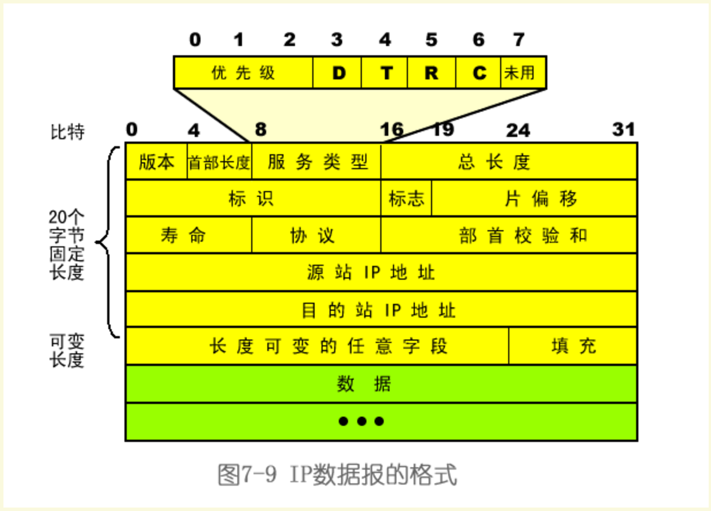
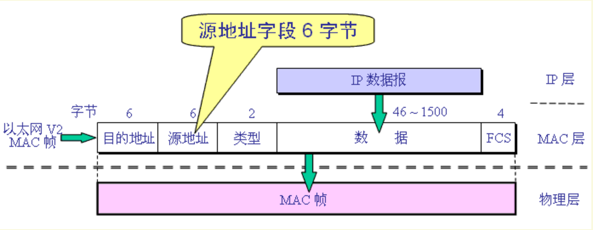
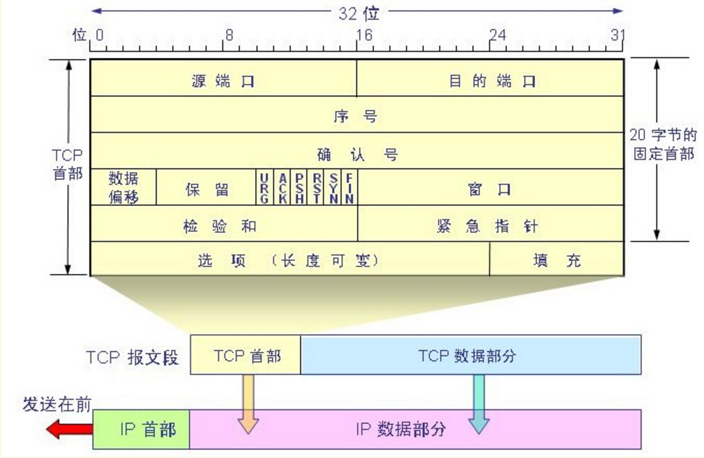
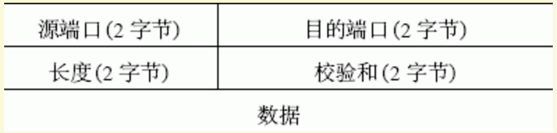
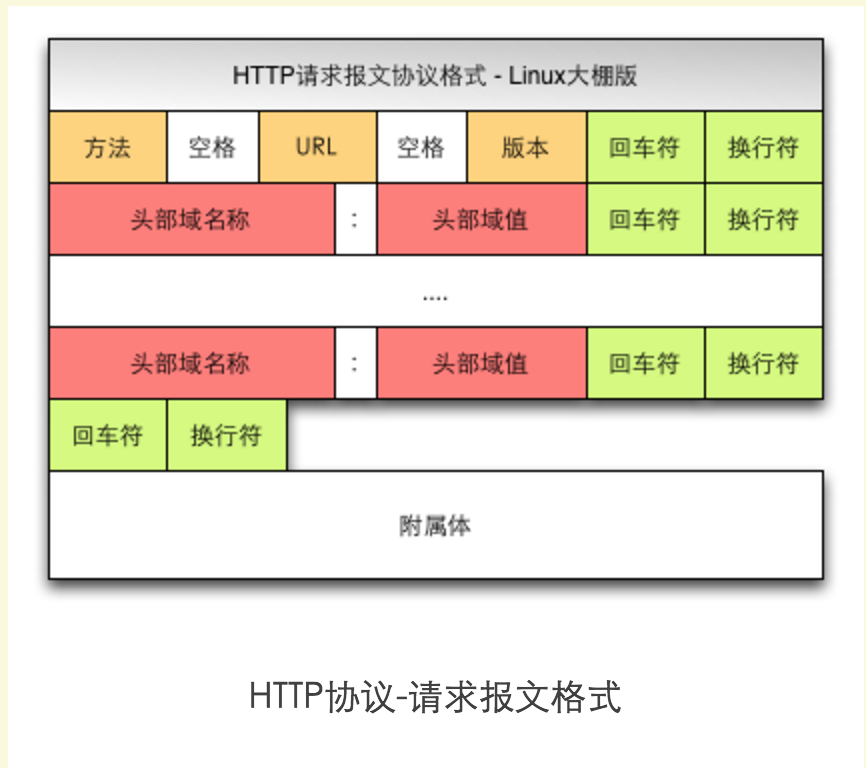
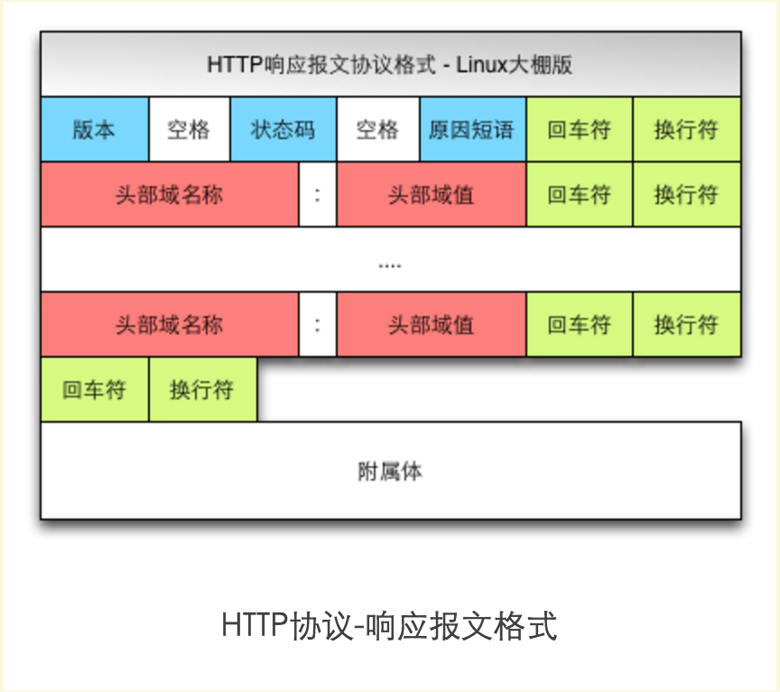
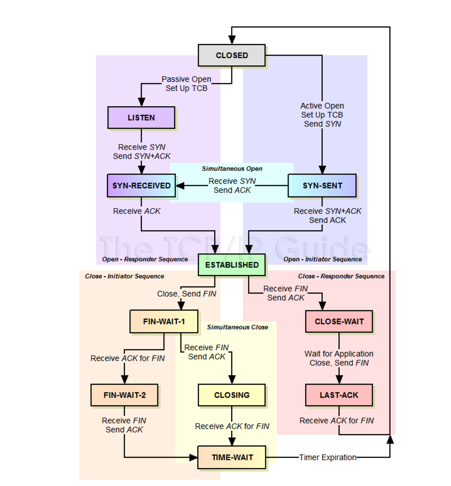

纸上得来终觉浅，绝知此事要躬行。
tcpdump 就是根据使用者的定义对网络上的数据包进行截获的包分析工具。tcpdump 可以将网络中传送的数据包的“头”完全截获下来提供分析。它支持针对网络层、协议、主机、网络或端口的过滤，并提供 and、or、not 等逻辑语句来帮助你去掉无用的信息。
1. 基本语法
主要介绍一下使用 tcpdump 工具时经常会使用到的参数！
过滤表达式可以给 tcpdump 传送过滤表达式来起到网络包过滤的作用，而且可以支持传入单个或多个过滤表达式。当你传入的过滤表达式含有 shell 通配符时，别忘使用单引号把表达式括起来，以防 shell 自作主张的把含有通配符的表达式先进行了解释和通配。我们可以使用 man pcap-filter 命令来查看帮助信息，你会发现，过滤表达式大体可以分成三种过滤条件，类型、方向和协议，这三种条件的搭配组合就构成。
[1] 过滤主机
- 抓取所有经过 eth1，目的或源地址是 192.168.1.1 的网络数据
tcpdump -i eth1 host 192.168.1.1
- 指定源地址
tcpdump -i eth1 src host 192.168.1.1
- 指定目的地址
tcpdump -i eth1 dst host 192.168.1.1
[2] 过滤端口
- 抓取所有经过 eth1，目的或源端口是 25 的网络数据
tcpdump -i eth1 port 25
- 指定源端口
tcpdump -i eth1 src port 25
- 指定目的端口
tcpdump -i eth1 dst port 25
# 只查目标机器端口是53或80的网络包
dst port 53
dst port 53
# tcpdump还支持如下的类型
host：指定主机名或IP地址
例如host roclinux.cn或host 202.112.18.34
net ：指定网络段
例如arp net 128.3或dst net 128.3
portrange：指定端口区域
例如src or dst portrange 6000-6008
如果我们没有设置过滤类型，那么默认是host
# tcpdump -i eth0 -c 3 'dst port 53 or dst port 53'
tcpdump: verbose output suppressed, use -v or -vv for full protocol decode
listening on eth0, link-type EN10MB (Ethernet), capture size 65535 bytes
13:29:04.530130 IP 114.255.192.96.29832 > 116.255.245.206.http: Flags [S], seq 3169042560, win 5840, options [mss 1460,sackOK,TS val 2949111416 ecr 0], length 0
13:29:04.530660 IP 116.255.245.206.43211 > ns.sc.cninfo.net.domain: 40188+ PTR? 206.245.255.116.in-addr.arpa. (46)
13:29:04.548589 IP 114.255.192.96.29832 > 116.255.245.206.http: Flags [.], ack 3709396068, win 5840, options [nop,nop,TS val 2949111475 ecr 1601243970], length 0
3 packets captured
10 packets received by filter
0 packets dropped by kernel
[3] 网络过滤
tcpdump -i eth1 net 192.168tcpdump -i eth1 src net 192.168tcpdump -i eth1 dst net 192.168
# 想查看这个源机器和那个目的机器之间的网络包
设置src-source和dst-destination就好了，tcpdump还支持使用and和or来进行搭配组合呢！
如果没有设置的话，默认是src or dst。
# tcpdump -i eth0 'dst 8.8.8.8'
tcpdump: verbose output suppressed, use -v or -vv for full protocol decode
listening on eth0, link-type EN10MB (Ethernet), capture size 65535 bytes
13:21:23.281978 IP 116.255.245.206 > google-public-dns-a.google.com: ICMP echo request, id 23081, seq 1, length 64
13:21:24.286663 IP 116.255.245.206 > google-public-dns-a.google.com: ICMP echo request, id 23081, seq 2, length 64
13:21:25.288612 IP 116.255.245.206 > google-public-dns-a.google.com: ICMP echo request, id 23081, seq 3, length 64
^C
3 packets captured
5 packets received by filter
0 packets dropped by kernel
[4] 协议过滤
tcpdump -i eth1 arptcpdump -i eth1 iptcpdump -i eth1 tcptcpdump -i eth1 udptcpdump -i eth1 icmp
# 只想抓UDP的包，不被TCP的包打扰
可以把udp改为ether、ip、ip6、arp、tcp、rarp等等
# 为啥这些协议里没有应用层协议呢？
其实理由很简单，应用层协议非基础类网络协议，经常会新增或淘汰。
tcpdump不会深入到应用层部分去智能解析，所以你看到的tcpdump支持的protocol都是应用层以下的。
# tcpdump -i eth0 -c 10 'udp'
tcpdump: verbose output suppressed, use -v or -vv for full protocol decode
listening on eth0, link-type EN10MB (Ethernet), capture size 65535 bytes
11:25:20.801612 IP 116.255.245.48.54808 > 229.111.112.12.csd-mgmt-port: UDP, length 4
11:25:20.802120 IP 116.255.245.206.54313 > ns.sc.cninfo.net.domain: 5256+ PTR? 12.112.111.229.in-addr.arpa. (45)
11:25:21.145126 IP ns.sc.cninfo.net.domain > 116.255.245.206.54313: 5256 NXDomain 0/0/0 (45)
11:25:21.145315 IP 116.255.245.206.46658 > ns.sc.cninfo.net.domain: 15551+ PTR? 48.245.255.116.in-addr.arpa. (45)
11:25:21.153966 IP 116.255.245.43.62220 > 229.111.112.12.csd-mgmt-port: UDP, length 4
11:25:21.180135 IP 116.255.245.61.hsrp > all-routers.mcast.net.hsrp: HSRPv0-hello 20: state=active group=21 addr=116.255.245.33
11:25:21.231151 IP ns.sc.cninfo.net.domain > 116.255.245.206.46658: 15551 NXDomain 0/0/0 (45)
7 packets captured
8 packets received by filter
0 packets dropped by kernel
[5] 常用表达式
非
!ornot
且
&&orand
或
||oror
抓取所有经过 eth1，目的地址是 192.168.1.254 或 192.168.1.200 端口是 80 的 TCP 数据
tcpdump -i eth1 '((tcp) and (port 80) and ((dst host 192.168.1.254) or (dst host 192.168.1.200)))'
抓取所有经过 eth1，目标 MAC 地址是 00:01:02:03:04:05 的 ICMP 数据
tcpdump -i eth1 '((icmp) and ((ether dst host 00:01:02:03:04:05)))'
抓取所有经过 eth1，目的网络是 192.168，但目的主机不是 192.168.1.200 的 TCP 数据
tcpdump -i eth1 '((tcp) and ((dst net 192.168) and (not dst host 192.168.1.200)))'
# tcpdump -i eth0 -nn -X 'port 53' -c 1
tcpdump: verbose output suppressed, use -v or -vv for full protocol decode
listening on eth0, link-type EN10MB (Ethernet), capture size 65535 bytes
19:48:33.285838 IP 116.255.245.206.47940 > 8.8.8.8.53: 22768+ A? www.baidu.com. (31)
0x0000: 4500 003b c341 0000 4011 3c93 74ff f5ce E..;.A..@.<.t...
0x0010: 0808 0808 bb44 0035 0027 b457 58f0 0100 .....D.5.'.WX...
0x0020: 0001 0000 0000 0000 0377 7777 0562 6169 .........www.bai
0x0030: 6475 0363 6f6d 0000 0100 01 du.com.....
1 packets captured
1 packets received by filter
0 packets dropped by kernel
2. 协议包头
介绍常见的，协议的包头定义格式！
- IP 数据报格式

- 以太网帧格式

- TCP 头格式

- UDP 头格式

- HTTP 协议格式


3. 包头过滤
主要介绍 TCP 和 UDP 协议包头的各个字段的对应含义以及抓取方式！
首先了解如何从包头过滤信息
proto[x:y] : 过滤从x字节开始的y字节数。比如ip[2:2]过滤出3、4字节（第一字节从0开始排）
proto[x:y] & z = 0 : proto[x:y]和z的与操作为0
proto[x:y] & z !=0 : proto[x:y]和z的与操作不为0
proto[x:y] & z = z : proto[x:y]和z的与操作为z
proto[x:y] = z : proto[x:y]等于z
操作符 : >, <, >=, <=, =, !=
IP头 ==> 只针对IPv4
0 1 2 3
0 1 2 3 4 5 6 7 8 9 0 1 2 3 4 5 6 7 8 9 0 1 2 3 4 5 6 7 8 9 0 1
+-+-+-+-+-+-+-+-+-+-+-+-+-+-+-+-+-+-+-+-+-+-+-+-+-+-+-+-+-+-+-+-+
|Version| IHL |Type of Service| Total Length |
+-+-+-+-+-+-+-+-+-+-+-+-+-+-+-+-+-+-+-+-+-+-+-+-+-+-+-+-+-+-+-+-+
| Identification |Flags| Fragment Offset |
+-+-+-+-+-+-+-+-+-+-+-+-+-+-+-+-+-+-+-+-+-+-+-+-+-+-+-+-+-+-+-+-+
| Time to Live | Protocol | Header Checksum |
+-+-+-+-+-+-+-+-+-+-+-+-+-+-+-+-+-+-+-+-+-+-+-+-+-+-+-+-+-+-+-+-+
| Source Address |
+-+-+-+-+-+-+-+-+-+-+-+-+-+-+-+-+-+-+-+-+-+-+-+-+-+-+-+-+-+-+-+-+
| Destination Address |
+-+-+-+-+-+-+-+-+-+-+-+-+-+-+-+-+-+-+-+-+-+-+-+-+-+-+-+-+-+-+-+-+
| Options | Padding | <-- optional
+-+-+-+-+-+-+-+-+-+-+-+-+-+-+-+-+-+-+-+-+-+-+-+-+-+-+-+-+-+-+-+-+
| DATA ... |
+-+-+-+-+-+-+-+-+-+-+-+-+-+-+-+-+-+-+-+-+-+-+-+-+-+-+-+-+-+-+-+-+
IP选项设置了吗？
- 一般的
IP头是20 字节，但 IP 头有选项设置，不能直接从偏移 21 字节处读取数据。IP 头有个长度字段可以知道头长度是否大于 20 字节。
+-+-+-+-+-+-+-+-+
|Version| IHL |
+-+-+-+-+-+-+-+-+
通常第一个字节的二进制值是：
01000101，分成两个部分0100= 4 表示 IP 版本，0101= 5 表示 IP 头 32 bit 的块数- 4 x 5 = 20 bytes
- 5 x 32 bits = 160 bits
- 160 bits / 2 =
20 bytes
如果第一字节第二部分的值大于 5，那么表示头有IP 选项，下面介绍两种过滤方法
方法一 ==> 比较法
# 比较第一字节的值是否大于`01000101`，这可以判断IPv4带IP选项的数据和IPv6的数据。
# `01000101`十进制等于`69`，计算方法如下所示
# 如果设置了IP选项，那么第一字节是01000110（十进制70）
# 过滤规则：`tcpdump -i eth1 'ip[0] > 69'`，IPv6的数据也会匹配
0 : 0 \
1 : 2^6 = 64 \ 第一部分 (IP版本)
0 : 0 /
0 : 0 /
-
0 : 0 \
1 : 2^2 = 4 \ 第二部分 (头长度)
0 : 0 /
1 : 2^0 = 1 /
64 + 4 + 1 = 69
方法二 ==> 位操作
# 正确的过滤方法
# (1)tcpdump -i eth1 'ip[0] & 15 > 5'
# (2)tcpdump -i eth1 'ip[0] & 0x0f > 5'
0100 0101 : 第一字节的二进制
0000 1111 : 与操作
<=========
0000 0101 : 结果
分片标记
- 当发送端的
MTU大于到目的路径链路上的MTU时就会被分片，权威的请参考《TCP/IP 详解》 Fragment Offset字段只有在分片的时候才使用- 要抓
Flags中带DF位标记的不分片的包，第七字节的值应该是：01000000 = 64 tcpdump -i eth1 'ip[6] = 64'，从0开始编号
分片信息在IP头的第七和第八字节
+-+-+-+-+-+-+-+-+-+-+-+-+-+-+-+-+
|Flags| Fragment Offset |
+-+-+-+-+-+-+-+-+-+-+-+-+-+-+-+-+
Bit 0: 保留，必须是0
Bit 1: (DF) 0 = 可能分片, 1 = 不分片
Bit 2: (MF) 0 = 最后的分片, 1 = 还有分片
抓分片包
- 匹配
MF分片包，第七字节的值应该是：00100000 = 32tcpdump -i eth1 'ip[6] = 32'
- 最后分片包的开始 3 位是 0，但是有
Fragment Offset字段 - 匹配分片和最后分片
tcpdump -i eth1 '((ip[6:2] > 0) and (not ip[6] = 64))'
- 测试分片可以用如下命令
ping -M want -s 3000 192.168.1.1
匹配小 TTL
TTL字段在第九字节，并且正好是完整的一个字节，TTL 最大值是255，二进制为11111111。- 可以用下面的命令验证一下
ping -M want -s 3000 -t 256 192.168.1.200ping: ttl 256 out of range
- 在网关可以用下面的命令看看网络中谁在使用
traceroutetcpdump -i eth1 'ip[8] < 5'
- 可以用下面的命令验证一下
+-+-+-+-+-+-+-+-+
| Time to Live |
+-+-+-+-+-+-+-+-+
抓大于 X 字节的包
- 大于 600 字节
tcpdump -i eth1 'ip[2:2] > 600'
更多的 IP 过滤
首先还是需要知道 TCP 基本结构，再次推荐《TCP/IP 详解》，卷一就够看的了
- TCP 头
0 1 2 3
0 1 2 3 4 5 6 7 8 9 0 1 2 3 4 5 6 7 8 9 0 1 2 3 4 5 6 7 8 9 0 1
+-+-+-+-+-+-+-+-+-+-+-+-+-+-+-+-+-+-+-+-+-+-+-+-+-+-+-+-+-+-+-+-+
| Source Port | Destination Port |
+-+-+-+-+-+-+-+-+-+-+-+-+-+-+-+-+-+-+-+-+-+-+-+-+-+-+-+-+-+-+-+-+
| Sequence Number |
+-+-+-+-+-+-+-+-+-+-+-+-+-+-+-+-+-+-+-+-+-+-+-+-+-+-+-+-+-+-+-+-+
| Acknowledgment Number |
+-+-+-+-+-+-+-+-+-+-+-+-+-+-+-+-+-+-+-+-+-+-+-+-+-+-+-+-+-+-+-+-+
| Data | |C|E|U|A|P|R|S|F| |
| Offset| Res. |W|C|R|C|S|S|Y|I| Window |
| | |R|E|G|K|H|T|N|N| |
+-+-+-+-+-+-+-+-+-+-+-+-+-+-+-+-+-+-+-+-+-+-+-+-+-+-+-+-+-+-+-+-+
| Checksum | Urgent Pointer |
+-+-+-+-+-+-+-+-+-+-+-+-+-+-+-+-+-+-+-+-+-+-+-+-+-+-+-+-+-+-+-+-+
| Options | Padding |
+-+-+-+-+-+-+-+-+-+-+-+-+-+-+-+-+-+-+-+-+-+-+-+-+-+-+-+-+-+-+-+-+
| data |
+-+-+-+-+-+-+-+-+-+-+-+-+-+-+-+-+-+-+-+-+-+-+-+-+-+-+-+-+-+-+-+-+
抓取源端口大于 1024 的 TCP 数据包
tcpdump -i eth1 'tcp[0:2] > 1024'
匹配
TCP数据包的特殊标记
TCP标记定义在TCP头的第十四个字节
+-+-+-+-+-+-+-+-+
|C|E|U|A|P|R|S|F|
|W|C|R|C|S|S|Y|I|
|R|E|G|K|H|T|N|N|
+-+-+-+-+-+-+-+-+
- TCP 三次握手
源发送SYN
目标回答SYN, ACK
源发送ACK
没女朋友的童鞋要学习一下：
1. MM，你的手有空吗？--
2. 有空，你呢？\~~
3. 我也有空 *_*
失败的loser是酱紫的：
1. MM，这是你掉的板砖吗？(SYN) ￣▽￣
2. 不是，找拍啊？(RST-ACK) ˋ﹏ˊ
只抓 SYN 包，第十四字节是二进制的 00000010，也就是十进制的 2
tcpdump -i eth1 'tcp[13] = 2'
抓 SYN, ACK （00010010 or 18）
tcpdump -i eth1 'tcp[13] = 18'
抓 SYN 或者 SYN-ACK
tcpdump -i eth1 'tcp[13] & 2 = 2'- 用到了位操作，就是不管 ACK 位是啥。
抓 PSH-ACK
tcpdump -i eth1 'tcp[13] = 24'
抓所有包含 FIN 标记的包（FIN 通常和 ACK 一起，表示幽会完了，回见）
tcpdump -i eth1 'tcp[13] & 1 = 1'
抓 RST（勾搭没成功，伟大的 greatwall 对她认为有敏感信息的连接发 RST 包，典型的棒打鸳鸯）
tcpdump -i eth1 'tcp[13] & 4 = 4'
TCP 各种状态的标记

补充知识
这里提供了部分常用的字段偏移名字
icmptype(ICMP 类型字段)icmpcode(ICMP 符号字段)tcpflags(TCP 标记字段)
ICMP类型值有：- icmp-echoreply
- icmp-unreach
- icmp-sourcequench
- icmp-redirect
- icmp-echo
- icmp-routeradvert
- icmp-routersolicit
- icmp-timxceed
- icmp-paramprob
- icmp-tstamp
- icmp-tstampreply
- icmp-ireq
- icmp-ireqreply
- icmp-maskreq
- icmp-maskreply
TCP标记值- tcp-fin
- tcp-syn
- tcp-rst
- tcp-push
- tcp-push
- tcp-ack
- tcp-urg
按照 TCP 标记位抓包
- 只抓 SYN 包
tcpdump -i eth1 'tcp[tcpflags] = tcp-syn'
- 抓 SYN, ACK
tcpdump -i eth1 'tcp[tcpflags] & tcp-syn != 0 and tcp[tcpflags] & tcp-ack != 0'
- 只抓 SYN 包
抓 SMTP 数据
tcpdump -i eth1 '((port 25) and (tcp[(tcp[12]>>2):4] = 0x4d41494c))'- 抓取数据区开始为”MAIL”的包，”MAIL”的十六进制为 0x4d41494c。
抓 HTTP GET 数据
tcpdump -i eth1 'tcp[(tcp[12]>>2):4] = 0x47455420'- “GET “的十六进制是 47455420
抓 SSH 返回
tcpdump -i eth1 'tcp[(tcp[12]>>2):4] = 0x5353482D'- “SSH-“的十六进制是 0x5353482D
抓老版本的 SSH 返回信息，如”SSH-1.99..”
tcpdump -i eth1 '(tcp[(tcp[12]>>2):4] = 0x5353482D) and (tcp[((tcp[12]>>2)+4):2] = 0x312E)'
4. 详细注解
分析对应协议头部的对应位置展示！
如果是为了查看数据内容，建议用**tcpdump -s 0 -w filename**把数据包都保存下来，然后用wireshark的Follow TCP Stream/Follow UDP Stream来查看整个会话的内容。
-s 0是抓取完整数据包，否则默认只抓 68 字节。另外，用tcpflow也可以方便的获取TCP 会话内容，支持tcpdump的各种表达式。
UDP 头
- 抓 DNS 请求数据
tcpdump -i eth1 udp dst port 53
0 7 8 15 16 23 24 31
+--------+--------+--------+--------+
| Source | Destination |
| Port | Port |
+--------+--------+--------+--------+
| | |
| Length | Checksum |
+--------+--------+--------+--------+
| |
| DATA ... |
+-----------------------------------+
其他选项
-c参数对于运维人员来说也比较常用，因为流量比较大的服务器，靠人工CTRL+C还是抓的太多，甚至导致服务器宕机，于是可以用-c参数指定抓多少个包。
- 上面的命令计算抓 10000 个 SYN 包花费多少时间，可以判断访问量大概是多少
time tcpdump -nn -i eth0 'tcp[tcpflags] = tcp-syn' -c 10000 > /dev/null
5. 常用选项
详细介绍几乎所有 Tcpdump 工具的使用参数和功能特点！
- 【
-i选项】- 指明网卡设备- 是
interface的含义，是指我们有义务告诉tcpdump希望他去监听哪一个网卡。 - 这个选项，在我们一台服务器有多块网卡时很有必要。
- 是
- 【
-nn选项】- 端口不转换- 意思是说当
tcpdump遇到协议号或端口号时，不要将这些号码转换成对应的协议名称或端口名称。 - 比如，众所周知
21端口是FTP端口，我们希望显示 21，而非tcpdump自作聪明的将它显示成FTP。
- 意思是说当
- 【
-X选项】- 显示原始数据- 告诉
tcpdump命令，需要把协议头和包内容都原原本本的显示出来。（tcpdump 会以16进制和ASCII的形式显示），这在进行协议分析时是绝对的利器。
- 告诉
- 【
-c选项】- 抓取数据数量- 是
count的含义，这设置了我们希望tcpdump帮我们抓几个包。 - 设置的是 1，所以
tcpdump不会帮我再多抓那怕一个包回来。
- 是
- 【
-t选项】- 输出时不打印时间戳
# tcpdump -i eth0 -c 1
tcpdump: verbose output suppressed, use -v or -vv for full protocol decode
listening on eth0, link-type EN10MB (Ethernet), capture size 65535 bytes
10:37:21.843233 IP 172.16.242.168.37490 > 180.97.33.108.https: Flags [.], ack 689150289, win 16616, length 0
1 packets captured
466 packets received by filter
435 packets dropped by kernel
# tcpdump -i eth0 -c 1 -t
tcpdump: verbose output suppressed, use -v or -vv for full protocol decode
listening on eth0, link-type EN10MB (Ethernet), capture size 65535 bytes
IP 172.16.242.168.49653 > 172.16.242.2.domain: 13085+ A? safebrowsing.google.com. (41)
1 packets captured
144 packets received by filter
113 packets dropped by kernel
- 【
-v选项】- 输出更详细的信息- 加了
-v选项之后，在原有输出的基础之上，你还会看到tos值、ttl值、id值、len总长度、checknum校验值等。
- 加了
# tcpdump -i eth0 -c 1
tcpdump: verbose output suppressed, use -v or -vv for full protocol decode
listening on eth0, link-type EN10MB (Ethernet), capture size 65535 bytes
10:39:37.165046 IP 172.16.242.168.52751 > 117.34.37.33.https: Flags [P.], seq 442060690:442060731, ack 2316077603, win 17688, length 41
1 packets captured
151 packets received by filter
120 packets dropped by kernel
# tcpdump -i eth0 -c 1 -v
tcpdump: listening on eth0, link-type EN10MB (Ethernet), capture size 65535 bytes
10:40:13.260016 IP (tos 0x0, ttl 64, id 9853, offset 0, flags [DF], proto TCP (6), length 40)
172.16.242.168.37502 > 180.97.33.108.https: Flags [.], cksum 0x4fca (correct), ack 156783245, win 16616, length 0
1 packets captured
6 packets received by filter
0 packets dropped by kernel
- 【
-F选项】- 指定过滤表达式所在的文件- 还记得我们在第一招中所提到的命令么，我帮助大家回忆一下：
tcpdump -i eth0 -nn -X 'port 53' -c 1
- 这里面的
'port 53'便叫做过滤表达式，用于设置我们抓包的条件的，只有满足过滤条件的网络包，才会被抓过来。当这个过滤条件非常复杂，或者我们需要将一个过滤条件固化下来复用的时候，就会想到把它存到一个文本文件中。此时，-F选项就会派上用场。 - 我们建立了一个
filter.txt文本文件来存储过滤表达式，然后通过-F来指定filter.txt，这样tcpdump就会心知肚明地读取filter.txt中的内容作为过滤条件。
- 还记得我们在第一招中所提到的命令么，我帮助大家回忆一下：
# cat filter.txt
port 53
# tcpdump -i eth0 -c 1 -t -F filter.txt
tcpdump: verbose output suppressed, use -v or -vv for full protocol decode
listening on eth0, link-type EN10MB (Ethernet), capture size 65535 bytes
IP 116.255.245.206.54357 > ns.sc.cninfo.net.domain: 36720+ A? www.baidu.com. (31)
1 packets captured
6 packets received by filter
0 packets dropped by kernel
- 【
-w选项】- 将流量保存到文件中- 通过下面的例子可以看到，通过
-w选项将流量都存储在了flowdata文件中了。大家是否有兴趣less下flowdata，看看里面都是什么东东？悲剧，原来都是二进制格式的，无法直接通过文本方式查看。 tcpdump的-w方式是把raw packets（原始网络包）直接存储到文件中了，也就是存储的都是结构体形式，而非是分析之后的文本格式的信息，因此大家是无法直接通过less命令查看的。那么，怎么查看呢？大家想必也想到了，就是用-r选项。
- 通过下面的例子可以看到，通过
# tcpdump -i eth0 -w flowdata
tcpdump: listening on eth0, link-type EN10MB (Ethernet), capture size 65535 bytes
^C327 packets captured
327 packets received by filter
0 packets dropped by kernel
# less flowdata
"flowdata" may be a binary file. See it anyway?
- 【
-r选项】- 读取 raw packets 文件- 其实上面的命令就是在不知不觉中进行了流量回放，你会发现网络包被抓的速度都按照历史进行了回放，真像一个时光机 ！
- 由于是按
raw packets来存储的，所以你完全可以使用-e、-l和过滤表达式来对输出信息进行控制，十分方便。
# tcpdump -r flowdata
reading from file flowdata, link-type EN10MB (Ethernet)
10:45:23.455758 IP 172.16.242.168.40058 > 117.34.37.32.https: Flags [P.], seq 2287886069:2287886114, ack 956870133, win 65535, length 45
10:45:23.456117 IP 117.34.37.32.https > 172.16.242.168.40058: Flags [.], ack 45, win 64240, length 0
10:45:23.456565 IP 172.16.242.168.40058 > 117.34.37.32.https: Flags [P.], seq 45:76, ack 1, win 65535, length 31
10:45:23.456721 IP 117.34.37.32.https > 172.16.242.168.40058: Flags [.], ack 76, win 64240, length 0
10:45:23.456900 IP 172.16.242.168.40058 > 117.34.37.32.https: Flags [F.], seq 76, ack 1, win 65535, length 0
10:45:23.457045 IP 117.34.37.32.https > 172.16.242.168.40058: Flags [.], ack 77, win 64239, length 0
10:45:23.467109 IP 117.34.37.32.https > 172.16.242.168.40058: Flags [FP.], seq 1, ack 77, win 64239, length 0
10:45:23.467143 IP 172.16.242.168.40058 > 117.34.37.32.https: Flags [.], ack 2, win 52724, length 0
10:45:26.407157 IP 172.16.242.168.48750 > 172.16.242.2.domain: 14588+ A? www.baidu.com. (31)
10:45:26.407495 IP 172.16.242.168.48750 > 172.16.242.2.domain: 60890+ AAAA? www.baidu.com. (31)
10:45:26.408853 IP 172.16.242.168.46443 > 172.16.242.2.domain: 21719+ A? www.baidu.com. (31)
10:45:26.411392 IP 172.16.242.168.52147 > 172.16.242.2.domain: 55202+ A? ss1.bdstatic.com. (34)
10:45:26.411578 IP 172.16.242.168.52147 > 172.16.242.2.domain: 65317+ AAAA? ss1.bdstatic.com. (34)
10:45:26.417304 IP 172.16.242.2.domain > 172.16.242.168.48750: 60890 1/1/0 CNAME www.a.shifen.com. (115)
- 【
-e选项】- 增加以太网帧头部信息输出- 在刚才加
-e选项的输出中，会发现有oui Unknown的字样，这oui是什么东东呢？ OUI，即Organizationally unique identifier，是组织唯一标识符。在任何一块网卡（NIC）中烧录的6字节MAC地址中，前 3 个字节体现了 OUI，其表明了 NIC 的制造组织。通常情况下，该标识符是唯一的。
- 在刚才加
# tcpdump -i eth0 -c 1
tcpdump: verbose output suppressed, use -v or -vv for full protocol decode
listening on eth0, link-type EN10MB (Ethernet), capture size 65535 bytes
10:20:51.886750 IP 172.16.242.168.46570 > 172.16.242.2.domain: 603+ A? wiki.centos.org. (33)
# tcpdump -i eth0 -c 1 -e
tcpdump: verbose output suppressed, use -v or -vv for full protocol decode
listening on eth0, link-type EN10MB (Ethernet), capture size 65535 bytes
10:21:10.790558 00:0c:29:4a:40:c3 (oui Unknown) > 00:50:56:f7:3f:ff (oui Unknown), ethertype IPv4 (0x0800), length 1095: 172.16.242.168.37312 > 180.97.33.108.https: Flags [P.], seq 2109242280:2109243321, ack 2118171162, win 63000, length 1041
- 如果还是看不懂，说明你忘记了以太网协议的头格式，我再这里补充下，帮大家回忆回忆。
struct sniff_ethernet {
/* 目的主机的地址 */
u_char ether_dhost[ETHER_ADDR_LEN];
/* 源主机的地址 */
u_char ether_shost[ETHER_ADDR_LEN];
/* IP? ARP? RARP? etc */
u_short ether_type;
};
- 【
-l选项】- 使得输出变为行缓冲- 选项
-l的作用就是将tcpdump的输出变为行缓冲方式，这样可以确保tcpdump遇到的内容一旦是换行符即将缓冲的内容输出到标准输出，以便于利用管道或重定向方式来进行后续处理。 - 众所周知，
Linux/UNIX的标准I/O提供了全缓冲、行缓冲和无缓冲三种缓冲方式。标准错误是不带缓冲的，终端设备常为行缓冲，而其他情况默认都是全缓冲的。 - 大家在使用
tcpdump时，有时会有这样的需求：对于 tcpdump 输出的内容，提取每一行的第一个域，即时间域，并输出出来，为后续统计所用，这种场景下，我们就需要使用到-l来将默认的全缓冲变为行缓冲了。 - 如果不加
-l选项，那么只有全缓冲区满，才会输出一次，这样不仅会导致输出是间隔不顺畅的，而且当你ctrl-c时，很可能会断到一行的半截，损坏统计数据的完整性。
- 选项
# tcpdump -i eth0 -l |awk '{print $1}'
tcpdump: verbose output suppressed, use -v or -vv for full protocol decode
listening on eth0, link-type EN10MB (Ethernet), capture size 65535 bytes
22:56:57.571680
22:56:57.572103
22:56:57.599515
22:56:57.706286
22:56:57.888108
22:56:57.888296
22:56:57.973546
22:56:57.973768
22:56:57.975660
22:56:58.019052
22:56:58.019318
^C146 packets captured
161 packets received by filter
0 packets dropped by kernel
6. 实例演示
展示一下使用的使用方式，以备即时即用！
这个 ftp、ftp-data 到底对应哪个端口？除了 ftp/ftp-data，还有哪些服务名称我可以直接用呢？在 Linux 系统中，/etc/services 这个文件里面，就存储着所有知名服务和传输层端口的对应关系。这个对应关系是由 IANA 组织（互联网数字分配机构）来全权负责的，你可以到这个链接互联网数字分配机构通过 Web 方式查到。如果你直接把/etc/services 里的 ftp 对应的端口值从 21 改为了 8888，那么 tcpdump 就会去抓端口含有 8888 的网络包了。
# 抓取通过eth0网卡且来源是wsescape.com服务器
tcpdump -i eth0 'host wsescape.com'
# 抓取通过eth0网卡且wsescape.com和baidu.com和google.com之间通讯的网络包
tcpdump -i eth0 'host wsescape.com and (baidu.com or google.com)'
# 抓取使用ftp端口和ftp数据端口的网络包
tcpdump 'port ftp or ftp-data'
# 抓取wsescape.com和baidu.com之间建立TCP三次握手中第一个网络包
# 即带有SYN标记位的网络包，另外，目的主机不能是qiyi.com
tcpdump 'tcp[tcpflags] & tcp-syn != 0 and not dst host qiyi.com'
# 打印IP包长超过576字节的网络包
tcpdump 'ip[2:2] > 576'
# 打印广播包或多播包，同时数据链路层不是通过以太网媒介进行的
tcpdump 'ether[0] & 1 = 0 and ip[16] >= 224'
ip[0] & 0xf0 != 5
- IP 协议的第 0-4 位表示 IP 版本号，可以是 IPv4（值为 0100）或者 IPv6（0110）。IP 协议的第 5-8 位表示首部长度，单位是 4 字节，如果首部长度为默认的 20 字节(4 * 5)的话，此值应为 5，即 0101。ip[0]则是取这两个域的合体。0xf 中的 0x 表示十六进制，f0 是十六进制数，转换成 8 位的二进制数是 0000 1111。而 5 是一个十进制数，它转换成 8 位二进制数为 0000 0101。有了上面这些分析很清楚的知道，语句中!=的左侧部分就是提取 IP 包首部长度域，如果首部长度不等于 5，就满足过滤条件。言下之意也就是说，要求 IP 包的首部中含有可选字段。
ip[0] & 0x0f == 4
- 经过上述的例子很清楚的知道，这样例子是想判断 IP 版本号是否为 IPv4。大家可能已经有所体会，在写过滤表达式时，你需要把协议格式完全背在脑子里，才能把表达式写对。可这对大多数人来说，可能有些困难。为了让 tcpdump 工具更人性化一些，有一些常用的偏移量，可以通过一些名称来代替。比如 icmptype 表示 ICMP 协议的类型域、icmpcode 表示 ICMP 的 code 域，tcpflags 则表示 TCP 协议的标志字段域。如果一个过滤表达式有多个过滤条件，那么就需要使用逻辑符了，其中，!或 not 都可以表示否定，&&与 and 都可以表示与，而||与 or 都可以表示或。
# 分析下面这三个语句来加深记忆
tcpdump 'tcp[tcpflags] & tcp-syn != 0 and not dst host qiyi.com'
tcpdump 'ip[2:2] > 576'
tcpdump 'ether[0] & 1 = 0 and ip[16] >= 224'
7. 独门秘籍
独门秘籍，非你莫属！
- 使用-A 选项，则 tcpdump 只会显示 ASCII 形式的数据包内容，不会再以十六进制形式显示
- 使用-XX 选项，则 tcpdump 会从以太网部分就开始显示网络包内容，而不是仅从网络层协议开始显示
- 使用-D 选项，则 tcpdump 会列出所有可以选择的抓包对象
# tcpdump -D
1.eth0
2.any (Pseudo-device that captures on all interfaces)
3.lo
- 如果想查看哪些 ICMP 包中“目标不可达、主机不可达”的包，请使用这样的过滤表达式 icmp[0:2]==0x0301
- 要提取 TCP 协议的 SYN、ACK、FIN 标识字段，请使用这样的过滤表达式
# SYN
tcp[tcpflags] & tcp-syn
# ACK
tcp[tcpflags] & tcp-ack
# FIN
tcp[tcpflags] & tcp-fin
- 要提取 TCP 协议里的 SYN-ACK 数据包，不但可以使用上面的方法，也可以直接使用最本质的方法 tcp[13]==18
- 如果要抓取一个区间内的端口，可以使用 portrange 语法：
tcpdump -i eth0 -nn 'portrange 52-55' -c 1 -XX
8. 输出分析
分析 Tcpdump 到底输入了些什么内容！
- 现在，我们对于开头抓取的包进行彻底的剖析，来深入理解其内容。
# tcpdump -i eth0 -nn -X 'port 53' -c 1
tcpdump: verbose output suppressed, use -v or -vv for full protocol decode
listening on eth0, link-type EN10MB (Ethernet), capture size 65535 bytes
19:48:33.285838 IP 116.255.245.206.47940 > 8.8.8.8.53: 22768+ A? www.baidu.com. (31)
0x0000: 4500 003b c341 0000 4011 3c93 74ff f5ce E..;.A..@.<.t...
0x0010: 0808 0808 bb44 0035 0027 b457 58f0 0100 .....D.5.'.WX...
0x0020: 0001 0000 0000 0000 0377 7777 0562 6169 .........www.bai
0x0030: 6475 0363 6f6d 0000 0100 01 du.com.....
1 packets captured
1 packets received by filter
0 packets dropped by kernel
- 【第 1 行】
- 这一行，简单易懂，就是说你的命令里没有用到-v 和-vv，如果希望看到更全的输出内容，可以使用这两个选项。如果你有兴趣，可以试试，看看加上-vv 后，到底输出内容里会多些什么。
- 【第 2 行】
- 这一句表示我们监听的是通过 eth0 这个 NIC 设备的网络包，且它的链路层是基于以太网的，要抓的包大小限制是 65535 字节。包大小限制值可以通过-s 选项来设置，如果你要追求高性能，建议把这个值调低，这样可以有效避免在大流量情况下的丢包现象。
- 【第 3 行】
19:48:33.285838=> 分别对应着这个包被抓到的时、分、秒、微妙IP=> 表示这个包在网络层是 IP 包116.255.245.206.47940=> 表示这个包的源 IP 为 116.255.245.206，源端口为 47940。>=> 这个大于号表示数据包的传输方向8.8.8.8.53=> 表示这个包要发向的目的端 IP 是 8.8.8.8，目标端口为 53，也就是我们熟知的 DNS 服务端口22768+ A? www.baidu.com. (31)=> 这是 DNS 协议的内容，即请求 www.baidu.com 的 A 纪录
- 【第 4/5/6/7 行】
- 接下来便是 IP 包的内容了，是除去了以太网之后剩下的内容，其中左侧部分是十六进制内容，右侧部分是相应的 ASCII 码内容。
–
- IP 协议的首部分析
0x0000: 4500 003b c341 0000 4011 3c93 74ff f5ce E..;.A..@.<.t...
0x0010: 0808 0808 bb44 0035 0027 b457 58f0 0100 .....D.5.'.WX...
0x0020: 0001 0000 0000 0000 0377 7777 0562 6169 .........www.bai
0x0030: 6475 0363 6f6d 0000 0100 01 du.com.....
最外层是 IP 数据包，最开始的 1 字节（8bit）中，前 4bit 表示 IP 的版本，此处为 4，表示这是一个 IPv4 版本的 IP 包
后 4bit 表示这 IP 包的首部长度，此处的数字是 5，由于单位是 4 字节，因此可以计算得出这个 IP 包的首部长度是固定的 20 字节
0x bite
45 ==> 0100 0101
在 IP 版本和首部长度之后，接下来的 1 字节（8bit）是 00
这是 IP 协议的服务类型域（TOS），由于已经很少使用，因此此处被置为 00
0x bite
00 ==> 0000 0000
后面的 2 字节（16bit）是 003b，表示整个 IP 包的总长度（首部长度+数据长度），单位是字节
因此可以知道这个 IP 包的总长度是 59 字节（0x3b 需要转换为十进制）
0x 十进制
003b ==> 59
再向下的 2 字节（16bit）是标识域
如果 IP 包的大小超过了数据链路层的 MTU 限制，就需要对 IP 包进行分拆，此时就要用这个域来表示哪些包在分拆前是同一组的
此处的标识域值为 0xc341
0x 十进制
c341 ==> 49985
再继续向向下看，便是 3bit 的标志位
最高位为保留位，中间一位为 DF（don’t fragment），最低位为 MF（more fragments）
可以看到这三位是用来控制 IP 拆包后的组装所用，由于此包没有拆包，因此这三位都被置为 0
0x bite
'0' ==> 000
与上面的标志位配合的是紧接着的 13bit 的片偏移，但由于本包没有拆包，因此此域也无用，因此为 0
0x bite
000 ==> 0 0000 0000 0000
紧接着是 8bit 的 TTL（Time To Live，即生存周期），此包的值为 0x40，换算成十进制是 64
这表明这个网络包，如果经过了超过 64 个中间路由节点，则认为目的地不可达，中间路由器会将此包抛弃掉
0x 十进制
40 ==> 64
继续的 8bit 为协议域，用于指代上一层协议类型
此处的值为 0x11，对应十进制的 17，而 17 是 UDP 协议的代号，因此可以知道这个网络包所用的传输层协议是 UDP，而非 TCP
TCP 的协议号是 6，ICMP 的协议号是 1
0x 十进制
11 ==> 17
接下来的 2 个字节表示 IP 首部校验和，此处计算出来的结果是 3c93
0x 十进制
3c93 ==> 15507
再往下就是大家非常熟悉的 4 字节的 IP 源地址，即 74 ff f5 ce，转换成 IP 地址则为 116.255.245.206
0x 十进制
74ff f5ce ==> 116.255.245.206
再下面的 4 字节则为 IP 目的地址，即 08 08 08 08，转换成 IP 地址则为 8.8.8.8，这是著名的 Google-DNS 服务器地址
至此，网络层 IP 协议的首部 20 字节已经分析完了，再向下我们即将进入传输层 UDP 协议的包分析阶段。
0x 十进制
0808 0808 ==> 8.8.8.8
- UDP 首部解析
0x0000: 4500 003b c341 0000 4011 3c93 74ff f5ce E..;.A..@.<.t...
0x0010: 0808 0808 bb44 0035 0027 b457 58f0 0100 .....D.5.'.WX...
0x0020: 0001 0000 0000 0000 0377 7777 0562 6169 .........www.bai
0x0030: 6475 0363 6f6d 0000 0100 01 du.com.....
相对于 TCP 包来说，UDP 包的首部还是比较简单的，总共只有 8 个字节，是 UDP 首部部分。UDP 首部的前 2 个字节为源端口，此处为 bb 44，即 47940，而接下来的 2 字节为目的端口，值为 00 35，即 53（DNS 服务）。
0x 十进制
bb44 ==> 47940
0035 ==> 53
而接下来的 2 字节则表示 UDP 包的总长度（报头+数据部分）
此处的值为 00 27，这算成十进制则为 39
表示此 UDP 包的总长度为 39 字节，减去首部的 8 字节外，还有 31 字节来存储真正要传输的数据
0x 十进制
0027 ==> 39
而 UDP 首部的最后两个字节则是校验和部分，此处的值为 0xb457
0x 十进制
b457 ==> 46167
- 数据分析
再向下的部分，则是应用层协议的内容（本例中是 DNS 协议）了
如果你有兴趣，可以继续了解下 DNS 协议、HTTP 协议、FTP 协议等众多的应用层协议
这非常有利于大家在学习协议、追查网络问题时，透过现象看本质
0x0000: 4500 003b c341 0000 4011 3c93 74ff f5ce E..;.A..@.<.t...
0x0010: 0808 0808 bb44 0035 0027 b457 58f0 0100 .....D.5.'.WX...
0x0020: 0001 0000 0000 0000 0377 7777 0562 6169 .........www.bai
0x0030: 6475 0363 6f6d 0000 0100 01 du.com.....
9. 参考资料
送人玫瑰，手有余香！